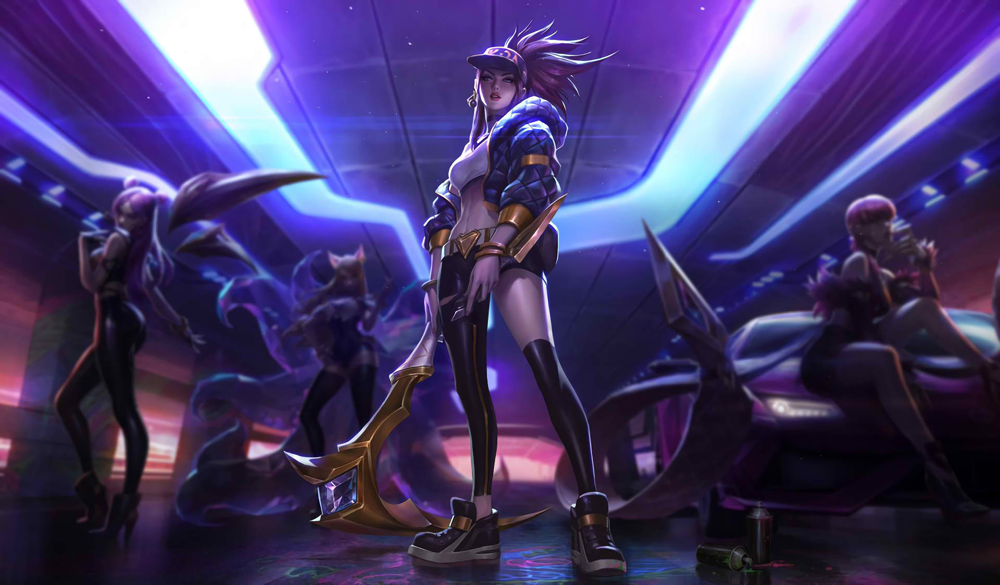
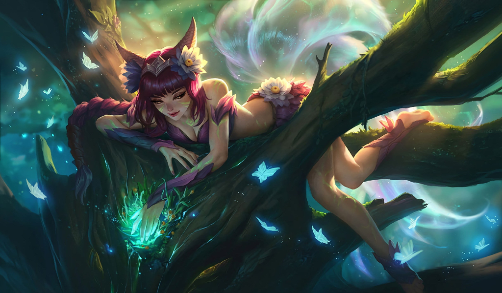
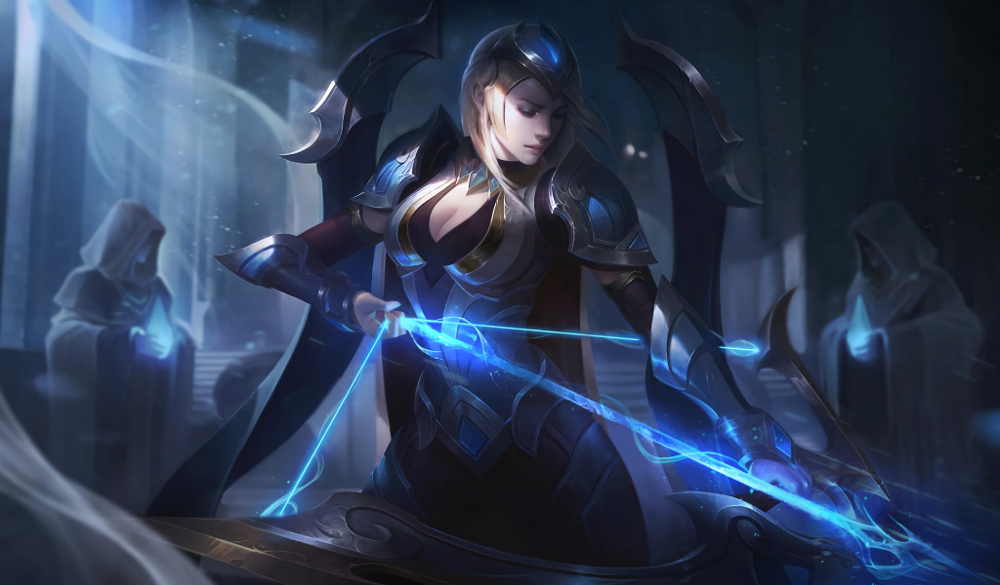
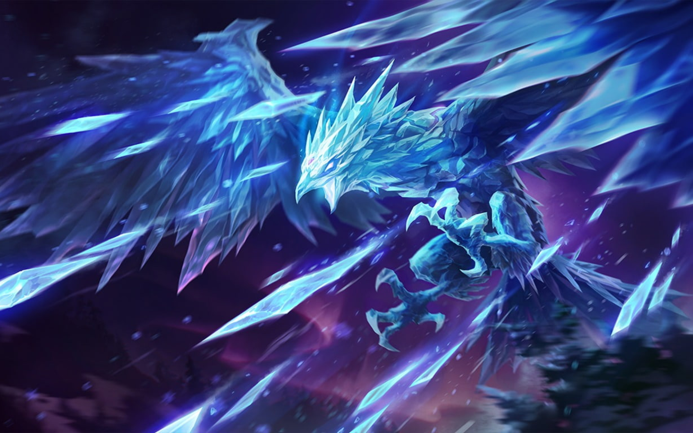
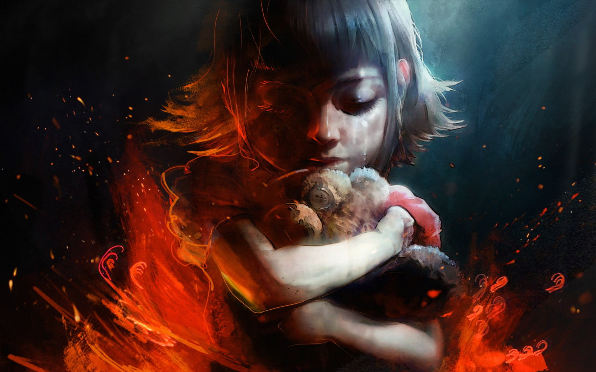
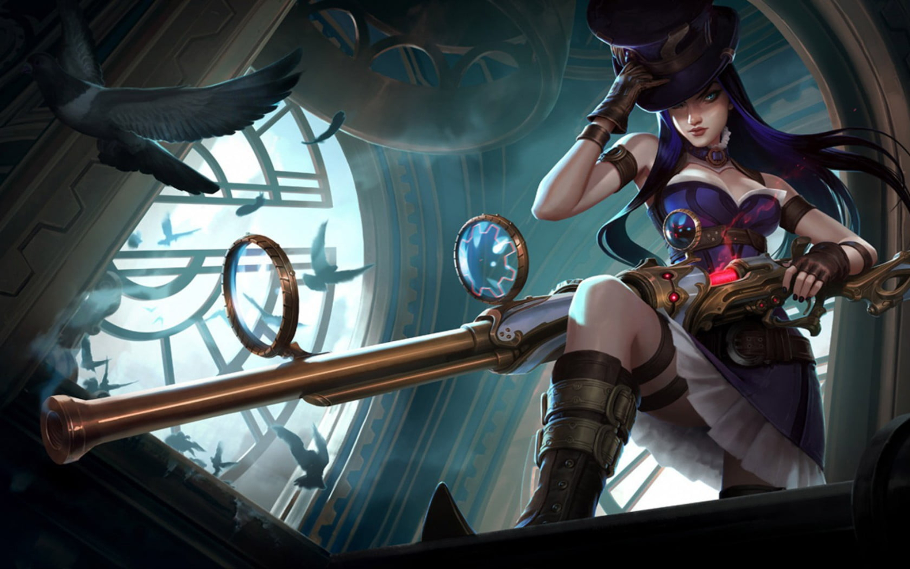
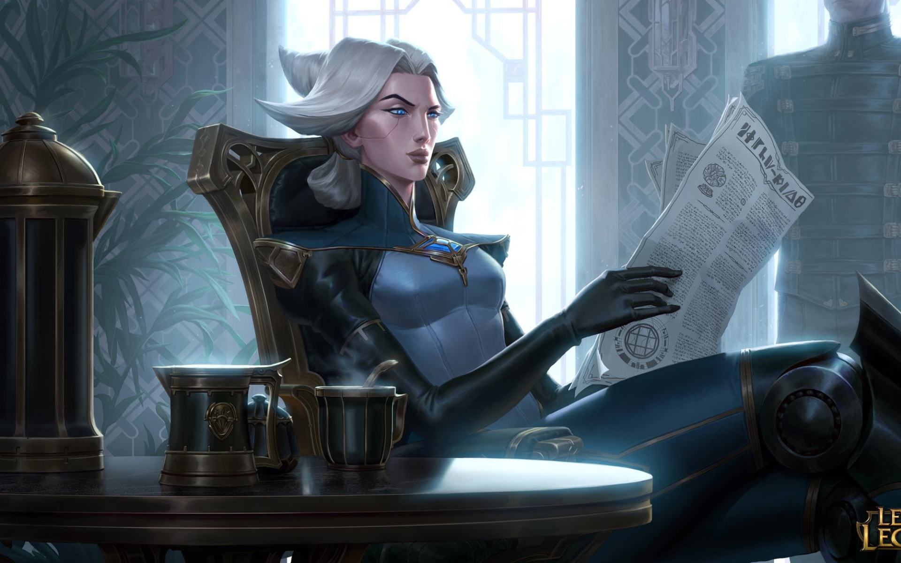
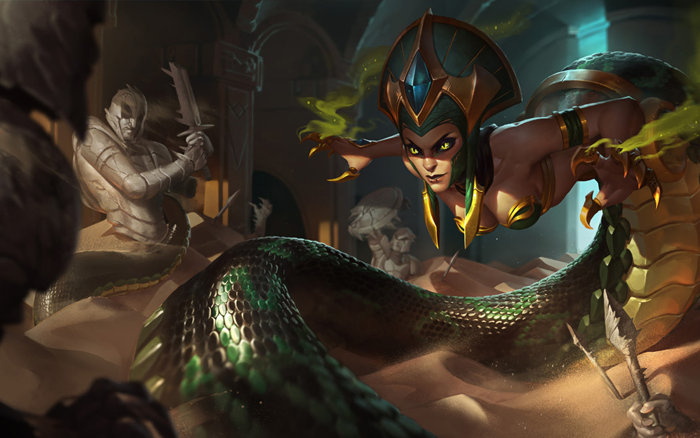
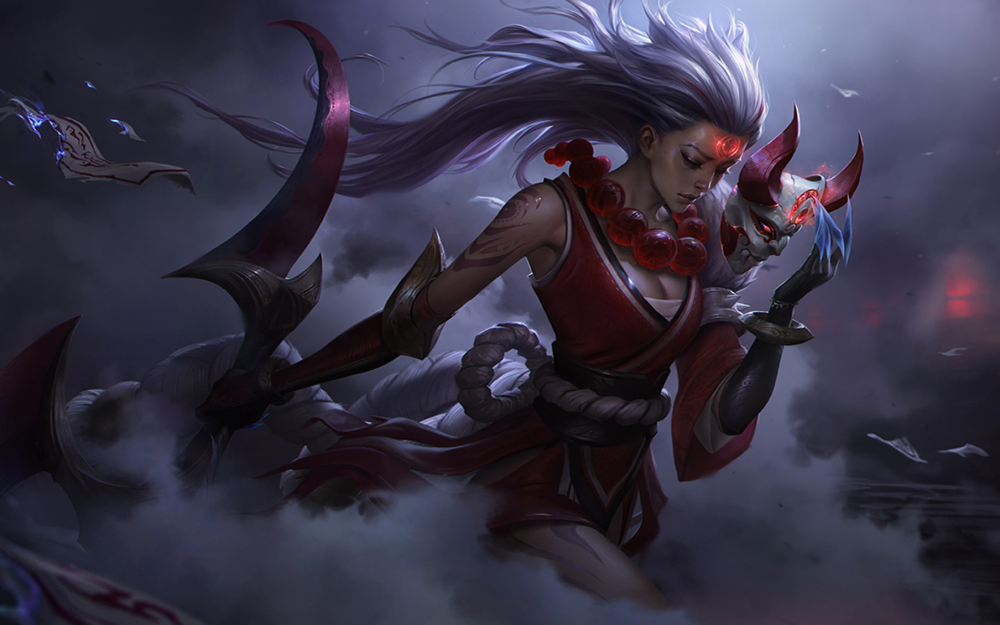

|
Yuumi, The Magical Cat
Passive:BOP 'N' BLOCK
Periodically, when Yuumi attacks a champion, she restores mana and gains a shield that follows her, protecting her and the ally she's attached to.
Q - PROWLING PROJECTILE
Yuumi fires a missile, dealing damage to the first target hit. It deals bonus damage and slows if it takes at least 1 second to get to its target. While Attached, the missile can be controlled with your cursor.
W - YOU AND ME!
Passively, Yuumi increases her ally's Adaptive Force and her own. Actively, Yuumi dashes to a target ally, becoming untargetable from everything except turrets.
E - ZOOMIES
Heals Yuumi and boosts Movement Speed and Attack Speed. If she's attached, she passes it to her ally instead.
R - FINAL CHAPTER
Yuumi channels seven waves of damage, rooting anyone hit by three or more. Yuumi can move, attach, and cast Zoomies! while channeling.
|
| 
|
Akali,The Rogue Assasin
Passive - ASSASSIN'S MARK
Dealing spell damage to a champion creates a ring of energy around them. Exiting that ring empowers Akali's next autoattack with bonus range and damage.
Q - FIVE POINT STRIKE
Akali throws out five kunai, dealing damage based on her bonus Attack Damage and Ability Power and slowing.
W - TWILIGHT SHROUD
Akali drops a cover of smoke and briefly gains Movement Speed. While inside the shroud, Akali becomes invisible and unable to be selected by enemy spells and attacks. Attacking or using abilities will briefly reveal her.
E - SHURIKEN FLIP
Flip backward and fire a shuriken forward, dealing magic damage. The first enemy or smoke cloud hit is marked. Re-cast to dash to the marked target, dealing additional damage.
R - PERFECT EXECUTION
Akali leaps in a direction, damaging enemies she strikes. Re-cast: Akali dashes in a direction, executing all enemies she strikes.
|
| 
|
Ahri, The Nined Tail Fox
Passive - ESSENCE THEFT
When Ahri strikes 9 enemies with her abilities, her next ability also heals her for each enemy hit.
Q - ORB OF DECEPTION
Ahri sends out and pulls back her orb, dealing magic damage on the way out and true damage on the way back.
W - W
FOX-FIRE
Ahri gains a brief burst of movement speed and releases three fox-fires, that lock onto and attack nearby enemies.
E - CHARM
Ahri blows a kiss that damages and charms an enemy it encounters, instantly stopping movement abilities and causing them to walk harmlessly towards her. The target temporarily takes increased damage from Ahri.
R - R
SPIRIT RUSH
Ahri dashes forward and fires essence bolts, damaging nearby enemies. Spirit Rush can be cast up to three times before going on cooldown.
|
| 
|
Ashe, The Frost Arrow
Passive - FROST SHOT
Ashe's attacks slow their target, causing her to deal increased damage to these targets. Ashe's critical strikes deal no bonus damage but apply an empowered slow to the target.
Q - RANGER'S FOCUS
Ashe builds up Focus by attacking. At maximum Focus, Ashe can cast Ranger's Focus to consume all stacks of Focus, temporarily increasing her Attack Speed and transforming her basic attack into a powerful flurry attack for the duration.
W - VOLLEY
Ashe fires arrows in a cone for increased damage. Also applies Frost Shot.
E - HAWKSHOT
Ashe sends her Hawk Spirit on a scouting mission anywhere on the map.
R - ENCHANTED CRYSTAL ARROW
Ashe fires a missile of ice in a straight line. If the arrow collides with an enemy Champion, it deals damage and stuns the Champion, stunning for longer the farther arrow has traveled. In addition, surrounding enemy units take damage and are slowed.
|
| 
|
Anivia, The Cryophoenix
Passive - REBIRTH
Upon taking fatal damage, Anivia reverts to an egg and is reborn with full health.
Q - FLASH FROST
Anivia brings her wings together and summons a sphere of ice that flies towards her opponents, chilling and damaging anyone in its path. When the sphere explodes it does moderate damage in a radius, stunning anyone in the area.
W - CRYSTALLIZE
Anivia condenses the moisture in the air into an impassable wall of ice to block all movement. The wall only lasts a short duration before it melts.
E - FROSTBITE
With a flap of her wings, Anivia blasts a freezing gust of wind at her target, dealing a low amount of damage. If the target was recently stunned by Flash Frost or damaged by a fully formed Glacial Storm, the damage they take is doubled.
R - GLACIAL STORM
Anivia summons a driving rain of ice and hail to damage her enemies and slow their advance.
|
| 
|
Annie, The Dark Child
Passive - PYROMANIA
After casting 4 spells, Annie's next offensive spell will stun the target.
Q - DISINTEGRATE
Annie hurls a Mana infused fireball, dealing damage and refunding the Mana cost if it destroys the target.
W - INCINERATE
Annie casts a blazing cone of fire, dealing damage to all enemies in the area.
E - MOLTEN SHIELD
Grants Annie or an ally a shield, a burst of Movement Speed, and damages enemies who attack her with basic attacks.
R - SUMMON: TIBBERS
Annie wills her bear Tibbers to life, dealing damage to units in the area. Tibbers can attack and also burns enemies that stand near him.
|
| 
|
Caitlyn, The Sheriff of Piltover
Passive - HEADSHOT
Every few basic attacks, or against a target she has trapped or netted, Caitlyn will fire a headshot dealing bonus damage that scales with her critical strike chance. On trapped or netted targets, Caitlyn's Headshot attack range is doubled.
Q - PILTOVER PEACEMAKER
Caitlyn revs up her rifle for 1 second to unleash a penetrating shot that deals physical damage (deals less damage to subsequent targets).
W - YORDLE SNAP TRAP
Caitlyn sets a trap to find sneaky yordles. When sprung, the trap reveals and immobilizes the enemy champion for 1.5 seconds, granting Caitlyn an empowered Headshot.
E - 90 CALIBER NET
Caitlyn fires a heavy net to slow her target. The recoil knocks Caitlyn back.
R - ACE IN THE HOLE
Caitlyn takes time to line up the perfect shot, dealing massive damage to a single target at a huge range. Enemy champions can intercept the bullet for their ally.
|
| 
|
Camille, The Steel Shadow
Passive - ADAPTIVE DEFENSES
Basic attacks on champions grant a shield equal to a percentage of Camille's maximum health against their damage type (Physical or Magic) for a brief duration.
Q - PRECISION PROTOCOL
Camille's next attack deals bonus damage and grants bonus movement speed. This spell can be recast for a short period of time, doing significantly increased bonus damage if Camille delays a period of time between the two attacks.
W - TACTICAL SWEEP
Camille blasts in a cone after a delay, dealing damage. Enemies in the outer half are slowed and take extra damage, while also healing Camille.
E - HOOKSHOT
Camille pulls herself to a wall, leaping off and knocking up enemy champions upon landing.
R - THE HEXTECH ULTIMATUM
Camille dashes to target champion, anchoring them to the area. She also deals bonus magic damage to the target with her basic attacks.
|
| 
|
Cassiopeia,
Passive - SERPENTINE GRACE
Cassiopeia gains Movement Speed per level, but she cannot purchase Boots items.
Q - NOXIOUS BLAST
Cassiopeia blasts an area with Poison after a brief delay, granting her increased Movement Speed if she hits an enemy champion.
W - MIASMA
Cassiopeia releases several clouds of poison, slowing, grounding, and lightly damaging enemies that pass through them. Grounded enemies cannot use Movement abilities.
E - TWIN FANG
Cassiopeia lets loose an attack that deals increased damage to Poisoned targets and heals her for a percentage of the damage dealt. If the target dies from this attack, Cassiopeia regains Mana.
R - PETRIFYING GAZE
Cassiopeia releases a swirl of magical energy from her eyes, stunning any enemies in front of her that are facing her and slowing any others with their back turned.
|
| 
|
Diana, Scorn of the Moon
Passive - MOONSILVER BLADE
Every third strike cleaves nearby enemies for an additional magic damage. After casting a spell, Diana gains attack speed for her next 3 attacks.
Q - CRESCENT STRIKE
Unleashes a bolt of lunar energy in an arc dealing magic damage. Afflicts enemies struck with Moonlight, revealing them if they are not stealthed for 3 seconds.
W - PALE CASCADE
Diana creates three orbiting spheres that detonate on contact with enemies to deal damage in an area. She also gains a temporary shield that absorbs damage. If her third sphere detonates, the shield gains additional strength.
E - LUNAR RUSH
Becomes the living embodiment of the vengeful moon, dashing to an enemy and dealing magic damage. Lunar Rush has no cooldown when used to dash to an enemy afflicted with Moonlight. All other enemies will have the Moonlight debuff removed regardless of whether they were the target of Lunar Rush.
R - MOONFALL
Diana reveals and draws in all nearby enemies and slows them. If Diana pulls in one or more enemy champions, the moonlight crashes down onto her after a short delay, dealing magic damage in an area around her, increased for each target beyond the first pulled.
|